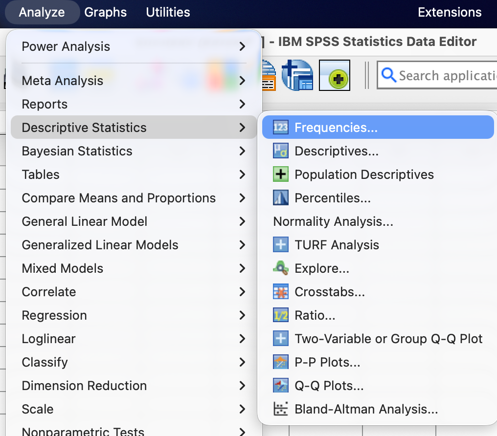
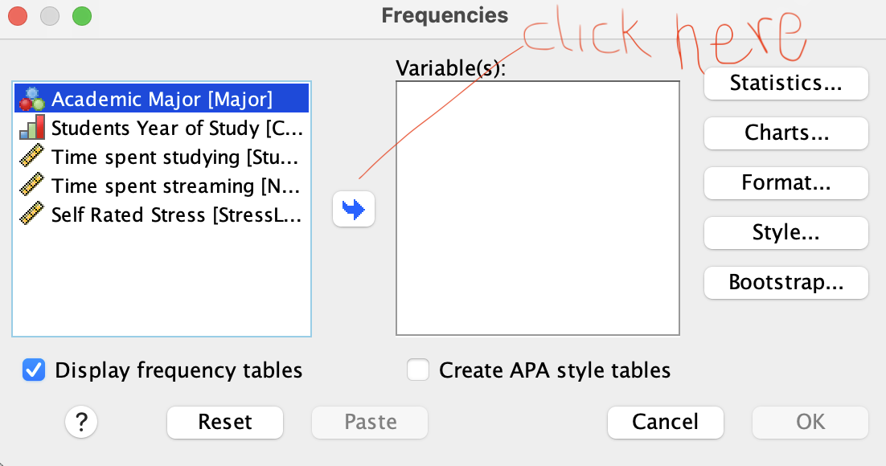
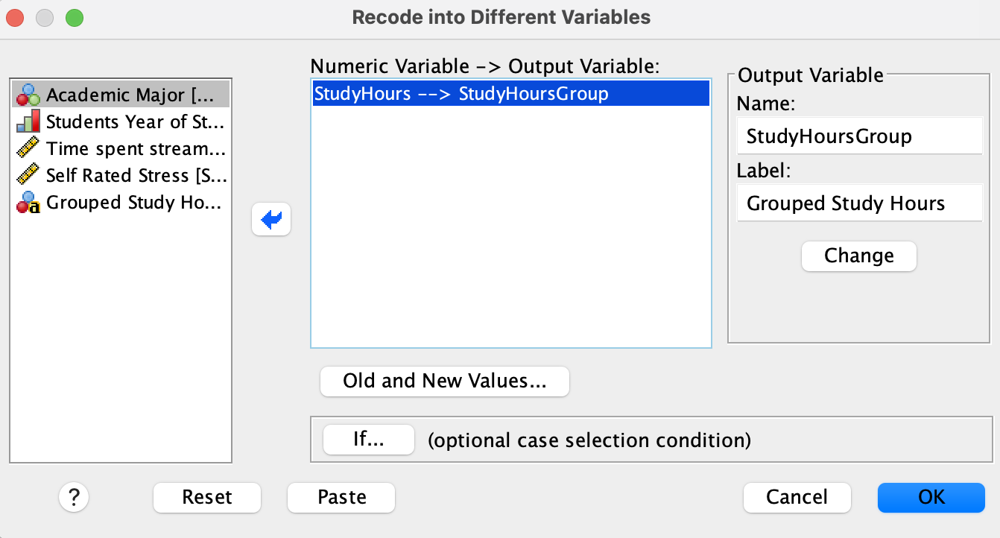
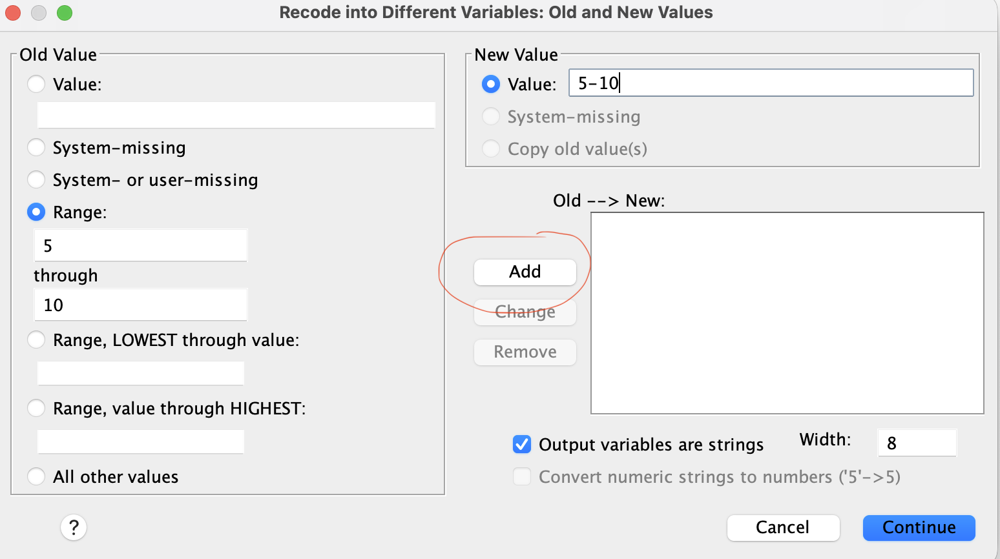

Lab 1: Frequency Distributions & Visualizations
Covers Material from Chapter 1 & 2
Overview
In this lab, you will be introduced to methods of data organization and visualization using SPSS. You will learn how to create a dataset, enter data, and generate frequency tables and graphs for both nominal (or ordinal) and scale variables. These are important beginning skills for analyzing data in behavioral sciences.
Part 1: Build Your Variable View
Open SPSS and create a new dataset. Click the Variable View tab and add the following 6 variables, one per row. For each one, follow these exact steps.
Row 1: StudentID
- Click the empty cell in row 1, “Name” column. Type:
StudentID - Leave Type as the default (Numeric).
- Click the Decimals cell for this row. Change it to
0(an ID number has no decimal places). - Click the Label cell. Type:
Student identifier - Click the Measure cell. Click the dropdown arrow and select Nominal.
- Why nominal? An ID number is just a name written as a digit — Student #7 isn’t “more” than Student #3.
Row 2: Major
- Name:
Major - Decimals:
0 - Label:
Academic major - Values: Click the Values cell, then click the small gray … button that appears on the right side of the cell. A “Value Labels” dialog should open.
- Click the
+sign to show Value box, and type1. In the Label box, typePsychology. Click Add. - Value
2, LabelBiology. Click Add. - Value
3, LabelBusiness. Click Add. - Value
4, LabelUndecided. Click Add. - Click OK.
- Click the
- Measure: select Nominal.
Row 3: ClassYear
- Name:
ClassYear - Decimals:
0 - Label:
Year in school - Values: same process as above —
1=Freshman,2=Sophomore,3=Junior,4=Senior(Add after each one, then OK)
- Measure: select Ordinal.
- Why ordinal and not nominal? Unlike majors, Freshman → Senior is an ordered sequence.
Row 4: StudyHours
- Name:
StudyHours - Decimals: change to
1(allow one decimal place, e.g., 8.5) - Label:
Hours spent studying per week - Values: leave blank (this variable’s numbers are real quantities, not category codes — nothing to label)
- Measure: select Scale.
- Why Scale? This is a continuous variable with a meaningful zero (0 hours studied means no studying at all), so it meets the textbook’s definition of a ratio scale. Recall that SPSS collapses
intervalandratiointo one category namedScale.
- Why Scale? This is a continuous variable with a meaningful zero (0 hours studied means no studying at all), so it meets the textbook’s definition of a ratio scale. Recall that SPSS collapses
Row 5: NetflixHours
- Name:
NetflixHrs - Decimals:
1 - Label:
Hours spent streaming video per week - Values: leave blank
- Measure: select Scale.
Row 6: StressLevel
- Name:
Stress - Decimals:
0 - Label:
Self-rated stress, 1 (low) to 10 (high) - Values: leave blank for now — we’ll come back to this one in the discussion question below.
- Measure: select Scale for now (we’ll revisit whether this is the right call)
The textbook describes four scales of measurement (nominal, ordinal, interval, ratio) but SPSS collapses the last two into one “Scale” category.
Part 2: Enter the Data
Click the Data View tab. Your 6 column headers (StudentID, Major, etc.) should already be there from Part 1. Type the following, one row per student — click a cell, type the number, press Tab or Enter to move to the next cell.
| StudentID | Major | ClassYear | StudyHours | NetflixHrs | Stress |
|---|---|---|---|---|---|
| 1 | 1 | 2 | 12.5 | 6.0 | 7 |
| 2 | 3 | 4 | 6.0 | 10.5 | 5 |
| 3 | 2 | 1 | 15.0 | 3.5 | 8 |
| 4 | 4 | 1 | 8.5 | 9.0 | 6 |
| 5 | 1 | 3 | 10.0 | 5.5 | 4 |
| 6 | 2 | 4 | 18.5 | 2.0 | 9 |
| 7 | 3 | 2 | 7.5 | 12.0 | 5 |
| 8 | 1 | 4 | 11.0 | 4 | 6 |
| 9 | 4 | 3 | 9.5 | 8.0 | 7 |
| 10 | 2 | 2 | 13.0 | 6.5 | 8 |
In Data View, the Major and ClassYear columns will still show plain numbers (1, 2, 3, 4) unless you turn on value labels. To check your coding: go to the View menu (top menu bar) → click Value Labels. The columns should now display “Freshman”, “Sophomore,” etc. instead of numbers. Toggle it back off and on to see both views — the number is what’s stored, the label is what humans read.
Save your file now: File → Save As → name it Lab_1_YourLastName.sav → Note the location you saved your file.
Part 3: Run Your First Output/Data Analyses
In this section, you’ll run two basic analyses in SPSS: a frequency table for a nominal variable, and summary statistics for a scale variable. Note that the output will appear in a separate window called the Output Viewer and that this output will have to be saved just like the data file.
Frequency table for a nominal variable
Go to the menu bar and click Analyze → Descriptive Statistics → Frequencies. See below

In the dialog box on the left, click Academic Major, then click the arrow button in the middle to move
Academic Majorinto the Variable(s) box on the right. Make sure the box that says “Display Frequency tables” is checked. See below:
Next, click OK.
The Output Viewer window opens with a table showing how many students fall into each major category, and what percentage each represents.
Visualizing a Nominal (or Ordinal) Variable
The common tools used to visualize the distribution of nominal or ordinal variables are bar graphs or pie charts. To create a bar graph for the variable Major, follow the steps steps below:
- Analyze → Descriptive Statistics → Frequencies. In the dialog box, select Academic Major and move it to the Variable(s) box.
- Click Charts on the right side of the dialog box. In the new dialog box, select Bar charts and click Continue.
- C OK. A bar graph will appear in the Output Viewer. The same procedure can be followed to create a pie chart by selecting Pie charts instead of Bar charts in the Charts dialog box.
It is often helpful to have percentages displayed on the vertical axis instead of the raw frequencies. To do this, select the percentages option under the Frequency Charts pop up box (step 2 above).
Frequency Table for a Scale Variable
We want to create a table that summarizes the variable StudyHours. Follow these steps:
Menu bar: Analyze → Descriptive Statistics → Frequencies. If Academic Major is still on the right box, click on it and click the back arrow to move it back to the left.
Now move StudyHours into the “Variable(s)” box as earlier. Make sure the Display frequency tables box is checked.
Click OK. A frequency table appears in the Output Viewer showing each study hour and the corresponding frequency.
When working with larger data sets, a frequency table on this kind is not helpful. We can use a grouped frequency table instead. Although the grouped frequency table loses some information, it is easier to read and interpret when we have a large number of unique values.
Although our data set is fairly small (n=10), we can still use it to demonstrate the process of creating a grouped frequency table for StudyHours, we will begin by transforming the variable to create three bins (5-10, 11-15, 16-20) as follows:
Menu bar: tranform → Recode into Different Variable.
Move the Variable StudyHours into the Input Variable → Output Variable box as shown below:

In the Output Variable section under name, write
StudyHoursGroup(no spaces). In the Label field, writeStudy Hours Group(spaces allowed) then click Change.Next, click Old and New Values. The following window will appear:

Start by checking the box that says Output variables are strings.
In the Old Value section, select Range and type
5in the first box and10in the second box as shown in the screenshot above. In the New Value section, write5-10.Click Add.
To create the next bin, enter 11 and 15 as earlier, then write
11-15under New Value, then click Add. Repeat this for16-20.Click Continue to return to the previous window, then click OK.
Take a look at the data window and you should see the new variable you just created called StudyHoursGroup.
To create a frequency table, we follow the steps from earlier:
- Analyze → Descriptive Statistics → Frequencies.
- Move the variable StudyHoursGroup into the “Variable(s)” box. Make sure the Display frequency tables box is checked. You may want to click on Charts and select None.
- Click OK. A frequency table appears in the Output Viewer showing how many students fall into each study hour group.
Visualizing a Scale Variable
There are various graphs that can be used to visualize the distribution of a scale variable. The most common ones are histograms, boxplots, dotplots, and stem-and-leaf plots. Histograms are good for showing the shape of the distribution, boxplots are good for showing the shape of the distributions as well as locations of the median, quartiles, and if there are any outliers.
For this lab, we will creat a histogram to visualize the distribution of StudyHours. Here are the steps:
- Menu bar: Analyze → Descriptive Statistics → Frequencies. Move the variable StudyHours into the “Variable(s)” box. Uncheck the box Display frequency tables (we do not need the table).
- Click Charts on the right side of the dialog box. In the new dialog box, select Histograms and click Continue.
- Click OK. A histogram appears in the Output Viewer showing the distribution of
StudyHours.
Based on the histogram, what can you say about the distribution of the study hours? Is the histogram roughly symmetric, skewed to the left, or skewed to the right?
Save your output file: File → Save As → name it Lab_1_Output_YourLastName.spv → Note the location you saved your file.
Take-Home Lab Exercises
Answer the following questions based on your SPSS output (more analyses may be required). Include screenshots of the relevant software outputs (e.g., frequency tables, bar graphs, histograms) in your report. Your report should be typed (Times New Roman, Font size 12, double spaced). The lab is graded out of 20 points. Ten points are for the 2 SPSS outputs and ten points are for your written responses to the questions below.
- (Frequency tables, 2 points.) Create a frequency table for the variable
ClassYear. Based on the table, answer the following questions:- What is the most common class year(s) among the students in this dataset?
- What percentage of students are either Freshmen or Sophomores?
- (Bar Graph, 2 points.) Create a bar graph for the variable
ClassYear. Based on the graph, answer the following questions:- Which year has the highest number of students?
- Which year has the lowest number of students?
- (Frequency Tables, 4 points.) Create a grouped frequency table for the variable
NetflixHoursusing the groups 0-4, 5-9, 10-14. Based on the table, answer the following questions:- What is the most common range of hours spent streaming video per week?
- What percentage of students spend more than 10 hours per week streaming video?
- (Histogram, 2 points.) Create a histogram for the variable
NetflixHours. Based on the histogram, what can you say about the distribution of the hours students spent streaming?